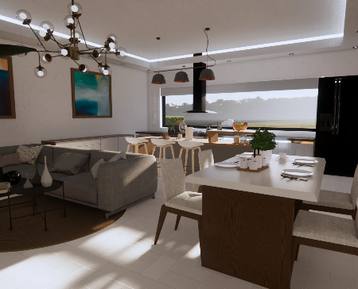
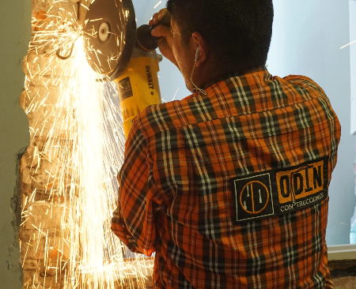

NUESTROS SERVICIOS

DISEÑO
ODIN Construcciones cuenta con un equipo de diseño que se encarga de crear Planos, Renders 3D, entre otros a su disposición.
Ver mas

OBRA
Nuestra Empresa está capacitada para desarrollar diversas actividades en el ámbitos de la construcción. En donde nos especializamos en: Viviendas Familiares, Remodelación-Ampliación de Viviendas, Oficinas, Centros Recreativos, Salones para Eventos Sociales, entre otros.
Ver masNOVEDADES

NUESTROS PROYECTOS


¿QUIENES SOMOS?

Somos un puñado de jóvenes profesionales que vinimos a traer soluciones a tu vida. Desde ODIN pensamos como acompañarte de principio a fin en el sueño de hacer o remodelar tu vivienda. Y no solo eso, sino que también te acompañamos cuando ya esta realizada.
Nosotros nacimos como idea en la crisis de la pandemia de COVID 19. Quisimos ver de qué forma podíamos ayudar a la sociedad y del mismo modo hacer algo sustentable. En los últimos años, que pasamos más tiempo en casa, nos dimos cuenta que prácticamente la teníamos descuidada. Vimos como las refacciones que hicimos no quedaron bien ensambladas, o como se deterioró nuestra vivienda. También tuvimos el tiempo de soñar en nuestra futura casa. Para todo esto surgió ODIN.
Tenemos tres áreas marcadas, cada una de ellas tiene diversas particularidades que la hacen única:
- ODIN CONSTRUCCIONES
- ODIN JARDINERIA Y PAISAJISMO